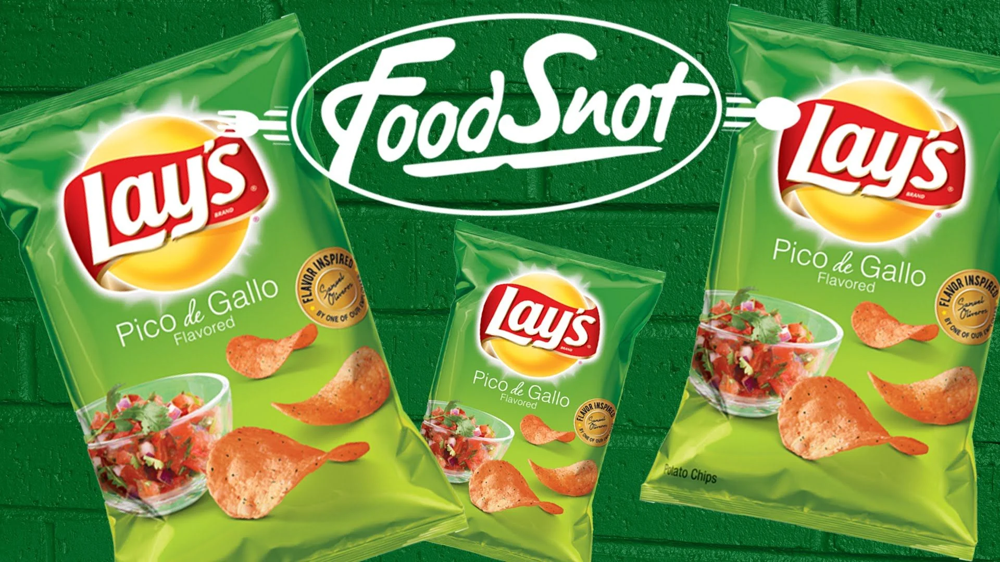

- 
-
Patatas Fritas
French, es una
empresa fundada en 1987 dedicada a la fabricación de forma artesanal de patatas
fritas, pellets y frutos secos.
Nuestra empresa se sitúa en Villacarrillo (Jaén), ciudad dentro del Parque natural de Cazorla, Segura y las
Villas y muy conocida por ser la ciudad que más aceite de oliva produce a nivel mundial.
En Patatas Fritas Domi, comercializamos nuestros productos a través de los canales alimentación, horeca e
impulso con marca propia, dónde están presentes en la provincia de Jaén, Albacete, Ciudad Real y en alguna
ocasiones en cualquier punto del país.